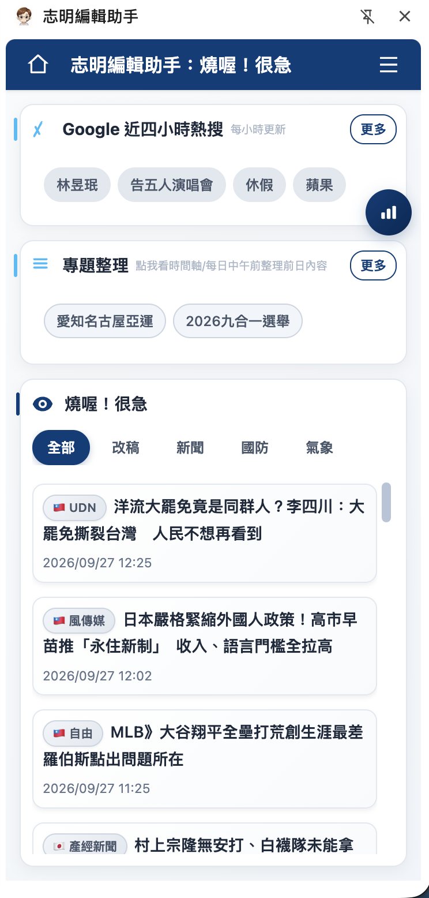
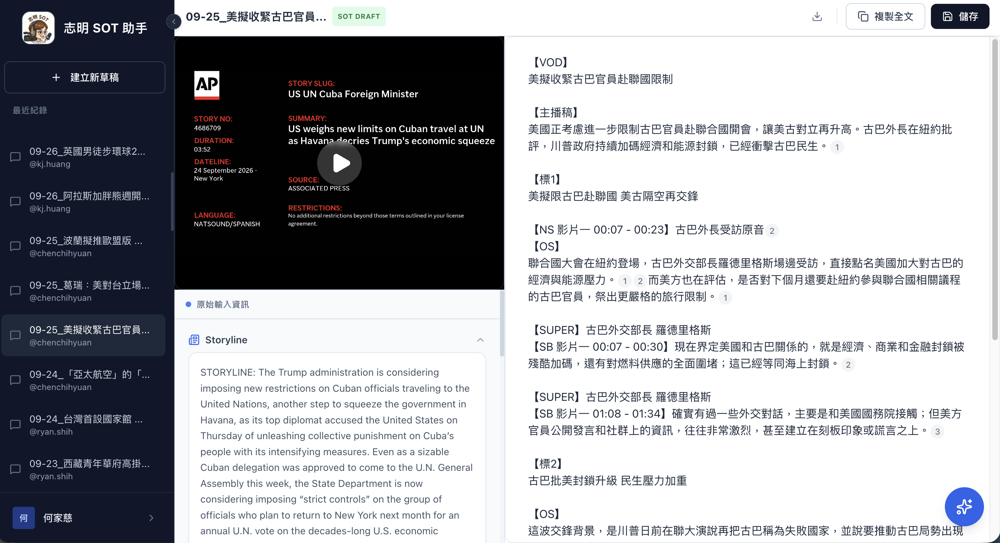

編輯室 AI 工具：從工作現場長出的產品Newsroom AI tools shaped by the work itself
我從編輯的日常工作出發，訪談需求、拆解流程，再把 AI 放在真正需要協助的位置。這些工具涵蓋文字編輯、新聞搜尋、電視稿件與短影音製作，也持續依同事的使用方式調整。I start with editors’ daily work: interview users, map the workflow, then place AI where it can actually help. These products cover text editing, news research, television scripts and short-form video, and continue to evolve with newsroom feedback.
三套工作流Three newsroom workflows

志明編輯助手Jiming Editor Assistant把生成標題、查核、輿情監測、AI 併稿與 AskCNA 放進編輯原本的瀏覽器工作流。Headlines, verification, trend monitoring, AI story merging and AskCNA inside the browser workflow editors already use.
志明 SOT 寫稿Jiming SOT Writer分析新聞影片、逐字稿與畫面，產生可編輯、可回溯時間碼的電視新聞初稿。Analyses footage, transcripts and visuals to produce an editable TV-news draft with traceable timecodes.- 志明短影音工作流Jiming short-video workflow用 Discord 接收任務，由 Claude Code Plugin 製作，並以三個確認點保留編輯的判斷與彈性。Discord receives the brief, a Claude Code plugin runs production, and three checkpoints keep editors in control.
共通的產品方法A shared product approach
- 先理解工作Understand the work從需求訪談與實際操作找出最耗時、最容易中斷的環節。Use interviews and observation to find the slowest, most disruptive step.
- 保留判斷空間Preserve judgement讓 AI 提供初稿、選項與分析依據，關鍵的新聞判斷仍由編輯決定。Let AI provide drafts, options and evidence while editors retain the key editorial decisions.
- 用回饋迭代Iterate from use先交付可試用版本，再依使用紀錄與同事回饋決定下一步。Ship a usable version first, then let usage and colleague feedback guide the next iteration.